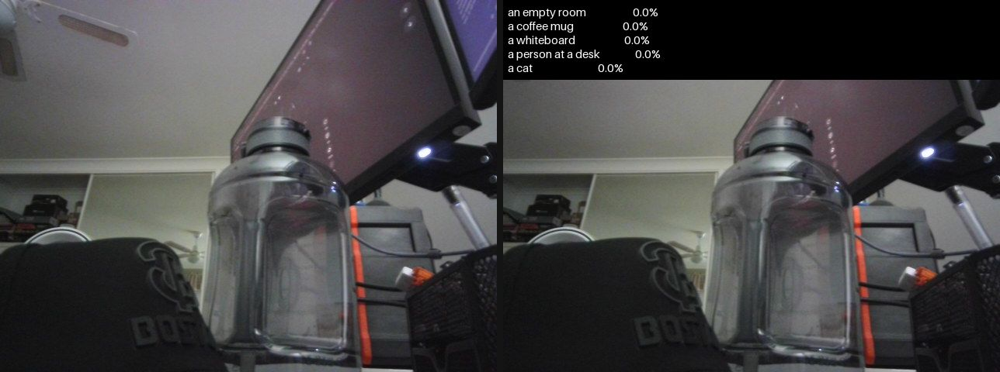

Classifying images against a label set supplied at inference time as text: how the shared image-text embedding space works, the mid-2026 model landscape (CLIP, OpenCLIP, SigLIP 2, MetaCLIP 2), evaluation and prompt engineering, and runnable code to benchmark the leading open encoders.
Author
Benedict Thekkel
1. What is Zero-Shot Image Classification?
Zero-shot image classification assigns an image to one of a set of classes that are named in natural language at inference time. The model was never trained with a classification head over those classes, and adding a new class costs nothing but writing its name down.
Input. Two things, both required at call time:
An image (RGB, resized to the encoder’s resolution, e.g. 224x224 or 384x384).
A list of candidate labels as strings, usually wrapped in a prompt template: "a photo of a {}.".
Output. One score per candidate label. For CLIP-family models the scores are a softmax over the candidate labels (they sum to 1, so they change when you add or remove a label). For SigLIP-family models they are independent sigmoids (each label is its own yes/no question, and they do not sum to 1).
The mechanism. A dual encoder maps images and text into one shared embedding space, trained so that matching (image, caption) pairs have high cosine similarity. Classification is then a nearest-neighbour lookup: embed the image once, embed each candidate label once, take cosine similarities, scale by the model’s learned temperature, and normalise. The classifier head is not a learned weight matrix - it is built on the fly out of text embeddings. Section 9 does exactly this by hand.
How this differs from ordinary image classification (see 01_Image_Classification): a supervised classifier has a fixed head of K logits, K is decided before training, the class names are just indices, and a 102nd class means labelling data and retraining. Here the “head” is a K x D matrix of text embeddings you can rebuild in milliseconds. You pay for that flexibility with lower accuracy on any fixed label set that you could have trained on.
An honest caveat about the word “zero-shot”. It means “no labelled examples of these classes with this head”. It does not mean the model has never seen the concept: CLIP’s 400M web pairs certainly contain apple pie. The CLIP paper itself frames this as measuring zero-shot transfer, and reports a train/test overlap analysis. Treat it as open-vocabulary recognition, not magic.
Neighbouring tasks:
Task
What it does
Typical tool
Supervised image classification
Fixed label set, trained head
see 01_Image_Classification (ViT, ConvNeXt)
Zero-shot object detection
Open-vocabulary boxes, not one label per image
see 13_Zero_Shot_Object_Detection (OWLv2, Grounding DINO)
Image feature extraction
The image tower alone, as an embedding
see 16_Image_Feature_Extraction (CLIP/SigLIP/DINOv2/DINOv3)
Image-text retrieval
Same embeddings, ranked the other way (text -> images)
CLIP, SigLIP, jina-clip
Open-vocabulary segmentation
Per-pixel version of this task
see 03_Image_Segmentation (CLIPSeg, SAN)
Image-to-text / VQA
A generative VLM answers instead of scoring
see 05_Image_to_Text
Linear probe / few-shot
Freeze the encoder, train a tiny head on N examples
scikit-learn logistic regression on CLIP features
2. Real-World Use Cases
The thing that makes this task commercially interesting is not the accuracy number, it is that the label set is a runtime argument. Every use case below exists because someone needed to change the classes faster than they could retrain a model.
Use case
Domain
Consumes / produces
Dominant constraint
Content moderation and trust & safety
Social platforms
Upload + an evolving policy vocabulary -> per-policy score
Policy churn (new labels weekly); needs independent per-label scores, so SigLIP’s sigmoid beats CLIP’s softmax
Media asset search / DAM
Stock and broadcast (Getty, Adobe Stock, Shutterstock)
Image -> embedding indexed offline; text query embedded at search time
Recall over an open vocabulary; index cost (one vector per asset); query latency
Fine-grained long tail (“A-line” vs “shift” dress); domain shift from web photos to studio shots
Robotics and embodied perception
Robotics (CLIPort, OpenVLA-style stacks)
Camera frame + object names lifted from a language instruction
On-device latency; the vocabulary is whatever the user just said
Clinical and scientific screening
Healthcare (microsoft/BiomedCLIP), biodiversity
Image + findings vocabulary -> triage score
Domain shift is fatal: general CLIP is near-chance on chest X-rays, so a domain-pretrained encoder is mandatory
Satellite and remote sensing
Geospatial (EuroSAT, land use)
Tile + land-use classes
The prompt must say “a satellite photo of a {}” or accuracy collapses; the template is the model
Dataset curation and auto-labelling
ML infrastructure (LAION, DataComp, DFN)
Billions of (image, alt-text) pairs -> CLIP-score filter
Throughput at web scale; the filter’s biases become the next model’s biases
Generative-model scoring and guardrails
Gen AI (CLIPScore, yuvalkirstain/PickScore_v1)
Generated image + prompt -> alignment score
Correlation with human preference, not top-1 accuracy; see 04_Text_to_Image
What the ImageNet number hides. A model with 78% zero-shot ImageNet accuracy is not 78% accurate on your problem, and the gap is usually not about the image tower:
The label set is the model. Class names, synonyms, and phrasing move accuracy by several points. apple_pie scores worse than apple pie; "a photo of {}, a type of food." scores better than either. If you do not report the template, your number is not reproducible (section 13 measures this).
Softmax forces a decision. CLIP’s scores are normalised over your candidate list, so a picture of a car handed a list of ten dog breeds confidently returns a dog breed. There is no “none of the above” unless you engineer one (a background class, a score threshold, or a sigmoid-loss model).
Fine-grained and out-of-distribution collapse. Verified numbers from the CLIP Benchmark suite: OpenAI CLIP ViT-B/32 scores 19.5% on FGVC Aircraft, 23.2% on CLEVR counting (near chance), and 44.3% on MNIST - a dataset a 1990s convnet solves. Zero-shot is strong on “web-photo-like” concepts and weak on everything a human would call a specialist skill.
Counting, spatial relations and compositionality are largely absent. The contrastive objective rewards bag-of-concepts matching, so “a dog to the left of a cat” and “a cat to the left of a dog” embed almost identically (see the ARO and Winoground benchmarks, and the MMVP “CLIP-blind pairs” of 2024).
Typographic attacks. Because the text tower and image tower share a space, rendered text inside the image is a first-class feature: tape a note reading “iPod” on an apple and CLIP calls it an iPod (Goh et al., “Multimodal Neurons”, 2021). Any deployment where an adversary controls the pixels must assume this.
3. How Modern Zero-Shot Image Classification Works
Pre-2021: attribute-based zero-shot learning. DAP/IAP (2009) predicted hand-annotated attributes (“has stripes”, “has hooves”) and matched them to unseen classes; DeViSE (2013) regressed image features onto word2vec label vectors. Both worked at toy scale and needed a curated attribute ontology. Dead as a practical approach.
2021 - CLIP (OpenAI, Feb 2021). The reset. Two towers (ViT or ResNet image encoder + transformer text encoder), a linear projection into a shared D-dim space, and a symmetric InfoNCE loss over the N x N cosine-similarity matrix of a batch: for each image the correct caption is the positive and the other N-1 captions in the batch are negatives, and vice versa. Trained on WIT-400M (400M web image-text pairs, never released). A learned temperature (logit_scale) scales the cosine similarities before the softmax. ViT-L/14@336 reached 76.2% zero-shot ImageNet top-1, matching a supervised ResNet-50 with zero ImageNet labels. Google’s ALIGN (1.8B noisier pairs) landed the same month with the same recipe.
2021-2022 - efficiency and objectives.LiT (locked-image tuning) froze a strong pretrained image tower and trained only the text tower, getting most of the benefit for a fraction of the compute. CoCa (2022) added a captioning decoder alongside the contrastive loss and still holds one of the highest contrastive zero-shot ImageNet numbers (86.3%). FLIP masked image patches to cut contrastive training cost.
2022 - OpenCLIP and the open reproduction. LAION released LAION-400M then LAION-2B/5B (CommonCrawl alt-text filtered by CLIP itself), and open_clip reproduced the recipe end to end. The scaling-law study (Cherti et al., CVPR 2023) showed zero-shot transfer follows a power law in compute/data/params - but with a dataset-dependent exponent. That was the first hard evidence that which pairs you train on matters as much as how many.
2023 - data curation overtakes scale.DataComp fixed the compute and varied the data, and a well-filtered 1.4B-pair subset beat OpenAI’s CLIP with ~1/3 the compute. MetaCLIP (“Demystifying CLIP Data”) reverse-engineered WIT’s balancing recipe on CommonCrawl. Apple’s Data Filtering Networks trained a small model whose only job is to filter, producing DFN-5B; apple/DFN5B-CLIP-ViT-H-14-378 is still the top entry of the open_clip 38-dataset results table (84.4% ImageNet zero-shot). The lesson of this era: at fixed compute, data quality is the highest-leverage knob.
2023 - SigLIP (Zhai et al., ICCV 2023): kill the softmax. InfoNCE needs the whole batch’s similarity matrix to normalise, which means an all-gather across every device and a memory cost quadratic in batch size - and CLIP-scale batches are 32k+. SigLIP replaces it with a pairwise sigmoid loss: every (image, text) pair is an independent binary classification (positive on the diagonal, negative off it), with a learned temperature and a learned bias b to correct the huge negative/positive imbalance. No global normalisation, so the loss decomposes across devices, memory drops sharply, and it works better at small batch sizes while still scaling to 1M. SigLIP SoViT-400m/14@384 hit 83.2%. A practical side effect that matters more than the training economics: the scores it produces at inference are independent per label, which is what multi-label problems like moderation actually need.
2024 - brute scale, and specialisation.EVA-CLIP-18B (18B params) averaged 80.7% over 27 zero-shot benchmarks, showing no saturation. In parallel the ecosystem specialised: Chinese-CLIP, BiomedCLIP, FashionCLIP, jina-clip for retrieval.
2025 - SigLIP 2 and MetaCLIP 2.SigLIP 2 (Feb 2025) keeps the sigmoid loss and stacks on a unified recipe: a captioning decoder loss (LocCa), self-distillation + masked prediction (SILC/TIPS) in the last 20% of training, online data curation (ACID) for the small models, and a de-biased multilingual WebLI-10B mix (90% English). Verified numbers from the big_vision release table: B/16-224 = 78.2%, So400m/14-384 = 84.1%, g-opt/16-384 = 85.0% - beating SigLIP 1 at every scale. The NaFlex variants accept variable resolution and native aspect ratio. MetaCLIP 2 (NeurIPS 2025) scaled the curation recipe to 300+ languages and 29B worldwide pairs; ViT-H/14 gets 81.3% English ImageNet and beats mSigLIP and SigLIP 2 on multilingual benchmarks (Babel-ImageNet, XM3600) - i.e. the “multilingual curse” is a data-curation artefact, not a law.
2025-2026 - Perception Encoder. Meta’s PE (CVPR 2025) reports 85.4% zero-shot ImageNet for PE-Core-G14-448, with the striking finding that the best visual embeddings live in intermediate layers, not at the output of the contrastive head. It currently needs Meta’s perception_models package, so it stays out of the runnable cells here.
Where mid-2026 stands. The frontier is 85-86% zero-shot ImageNet and it has moved slowly for two years. Nobody has beaten the dual-encoder + contrastive formula; the wins come from data curation and auxiliary objectives bolted onto it. For a practitioner the decision is boring and stable: SigLIP 2 is the default, CLIP ViT-B/32 remains the cheap baseline and the ecosystem’s lingua franca (it is what CLIPScore, diffusion guidance and a thousand pipelines assume), and MetaCLIP 2 is the answer when your labels are not in English.
Trade-off cheat sheet:
Family
Loss
Strength
Weakness
Example checkpoint
CLIP
softmax InfoNCE
Ecosystem default, strong robustness (ImageNet-A)
Needs huge batches + all-gather; closed data
openai/clip-vit-base-patch32
OpenCLIP (LAION / DataComp / DFN)
softmax InfoNCE
Open, reproducible data; DFN leads the open leaderboard
Data quality varies wildly between mixes
laion/CLIP-ViT-B-32-laion2B-s34B-b79K
SigLIP / SigLIP 2
pairwise sigmoid
Best accuracy per parameter; small-batch friendly; independent per-label scores
Scores are not a distribution, so “which class” needs an argmax not a probability
google/siglip2-base-patch16-224
MetaCLIP 2
softmax InfoNCE, worldwide data
300+ languages, no English tax
CC-BY-NC-4.0 (non-commercial)
facebook/metaclip-2-worldwide-s16
Perception Encoder
InfoNCE + tuned recipe
Highest published zero-shot ImageNet (85.4%)
Vendor library (perception_models)
facebook/PE-Core-G14-448
4. Evaluation Metrics
Top-1 / top-5 accuracy over the candidate label set:
where \(\ell_{ij}\) is the score of image \(i\) against class \(j\), \(y_i\) is the true class, and \(\mathbf{1}[\cdot]\) is 1 when the true class is among the \(k\) highest-scoring ones.
The logits come straight out of the shared space. Let \(u_i\) be the image embedding and \(v_j\) the text embedding of class \(j\)’s prompt. Both are L2-normalised, so the dot product is the cosine similarity, and the model’s learned temperature \(t\) scales it:
CLIP / MetaCLIP:\(p_{ij} = \mathrm{softmax}_j(\ell_{ij})\). Probabilities are relative to the candidate list. logit_scale is trained (initialised at 2.6592, i.e. \(e^t \approx 14.3\)) and converges near its clamp of 100, which makes the softmax very sharp.
SigLIP / SigLIP 2:\(p_{ij} = \sigma(\ell_{ij} + b)\) with a learned bias \(b\). Each label is scored independently; the scores do not sum to 1.
The temperature does not change the argmax, so top-1 is unaffected - but it completely changes calibration, and therefore any threshold you set in production.
Prompt templates are part of the metric. The same weights score several points apart depending on the wrapper text. The CLIP paper reports +1.3 points on ImageNet just from "a photo of a {}." over the bare class name, and +3.5 points more from prompt ensembling over 80 templates - about +5 points in total, for zero extra inference cost (the text bank is precomputed once). Ensembling means: embed the class under every template, L2-normalise each, average the embeddings, then re-normalise. Section 13 reproduces this effect on Food-101.
So: always report the template. A zero-shot number without its prompt is not reproducible.
Linear probe answers a different question: “how good are the features, really?” Freeze the image tower, throw away the text tower, and fit a logistic regression on the frozen embeddings of N labelled examples. It removes prompt engineering and text-tower quality as confounds and is the headline metric of the original CLIP paper (27 datasets). A model can have mediocre zero-shot accuracy and excellent linear-probe accuracy - that is the signature of a weak text tower or an unlucky vocabulary.
Speed. Report images/sec for the vision tower. The text bank costs one forward pass per (class x template) and is amortised to zero: at serving time a K-class zero-shot classifier is a supervised classifier plus one cached K x D matmul. Zero-shot is not slower at inference - it is slower to be accurate.
Pitfalls.
Class-name hygiene: Food-101 ships apple_pie; feed the model apple pie. Underscores cost real accuracy.
Ambiguous names (“crane” the bird vs the machine) need disambiguating prompts; the CLIP repo ships hand-fixed ImageNet class names for this reason.
Changing the label-set size changes softmax probabilities but not top-1.
Small samples lie: 200 images at ~90% accuracy carries a 95% CI of roughly +/- 4 points. A 2-point gap on 200 images is noise.
import torchimport torch.nn.functional as Ftorch.manual_seed(0)# Fabricate a shared embedding space: 3 images, 4 candidate classes, D=8.D =8img_emb = torch.randn(3, D)txt_emb = torch.randn(4, D)classes = ["apple pie", "sushi", "pizza", "ramen"]truth = torch.tensor([2, 0, 1]) # ground-truth class index per image# 1. L2-normalise both sides -> the dot product IS the cosine similarity.u = F.normalize(img_emb, dim=-1)v = F.normalize(txt_emb, dim=-1)cos = u @ v.T # (3 images, 4 classes), in [-1, 1]print("cosine similarities:\n", cos.round(decimals=3))# 2. The temperature. CLIP stores it as a log value (logit_scale) and trains it# from exp(2.6592) ~ 14.3 up to its clamp of 100. It never changes the argmax,# only the sharpness (and therefore the calibration) of the distribution.for logit_scale in [1.0, 14.3, 100.0]: probs = (logit_scale * cos).softmax(dim=-1)print(f"exp(t)={logit_scale:6.1f} image 0 probs: {[round(p, 3) for p in probs[0].tolist()]}")# 3. SigLIP scores the same similarities independently (sigmoid + learned bias).sig = torch.sigmoid(100.0* cos -12.0)print("siglip-style scores (independent, do NOT sum to 1):", [round(p, 3) for p in sig[0].tolist()], "sum =", round(sig[0].sum().item(), 3))# 4. Top-k accuracy on the (temperature-invariant) logits.def topk_accuracy(logits, targets, k=1):"Fraction of rows whose true class is in the top-k scored classes." k =min(k, logits.shape[-1]) topk = logits.topk(k, dim=-1).indicesreturn (topk == targets[:, None]).any(dim=-1).float().mean().item()logits =100.0* cosprint(f"top-1 {topk_accuracy(logits, truth, 1):.1%} top-3 {topk_accuracy(logits, truth, 3):.1%}")print("predictions:", [classes[i] for i in logits.argmax(dim=-1).tolist()])
Two separate worlds: the web-scale pretraining corpora that create the shared space, and the small labelled evaluation sets that are only ever used zero-shot (never trained on).
This notebook evaluates on Food-101 validation (ethz/food101, ungated): 101 fine-grained classes, enough to make top-5 and the prompt-template ablation meaningful, and each class name is a short natural phrase (after replacing the underscores). We take a shuffled 200-image slice. Note the download is ~1.3 GB of parquet for the validation split; it lands in DL_tasks/datasets/ (gitignored) and is cached after the first run.
Published Food-101 zero-shot top-1 from the open_clip results table, so you know what to expect below: CLIP B/32 84.0%, LAION-2B B/32 82.7%, SigLIP B/16 91.6%, CLIP L/14 93.1%.
6. The Model Landscape (mid-2026)
The authoritative public ranking is the CLIP Benchmark 38-dataset suite: open_clip results table (runner: LAION-AI/CLIP_benchmark). ImageNet-1k zero-shot top-1 below is taken from that table or from the model’s official release table.
Model
Params
License
Scope
Architecture / loss
IN-1k 0-shot
Best for
openai/clip-vit-base-patch32
151M
MIT
en
ViT-B/32 + InfoNCE
63.3%
The cheap baseline and ecosystem default (14.8 GFLOPs)
openai/clip-vit-large-patch14
428M
MIT
en
ViT-L/14 + InfoNCE
75.5%
Best OpenAI CLIP; unusually robust (70.8% on ImageNet-A)
laion/CLIP-ViT-B-32-laion2B-s34B-b79K
151M
MIT
en
ViT-B/32, LAION-2B
66.6%
Same architecture as OpenAI’s, open data - the clean A/B on data
google/siglip-base-patch16-224
203M
Apache 2.0
en
ViT-B/16 + sigmoid
76.0%
Accuracy per parameter; beats CLIP L/14 at half the size
google/siglip2-base-patch16-224
375M
Apache 2.0
multilingual
+ decoder loss, self-distill
78.2%
The sensible 2026 default; this notebook’s pick
google/siglip2-so400m-patch14-384
1.14B
Apache 2.0
multilingual
SoViT-400m/14
84.1%
Near-SOTA that still fits a 12 GB card in fp16 (2.3 GB)
google/siglip2-giant-opt-patch16-384
1.87B
Apache 2.0
multilingual
g-opt/16
85.0%
Best open weights; 3.7 GB in fp16, still fits (slowly)
Leader of the open_clip table; ships in open_clip format
facebook/PE-Core-G14-448
1.88B (vision)
Apache 2.0
en
Perception Encoder
85.4%
Highest published zero-shot; needs perception_models
BAAI/EVA-CLIP-18B
18B
MIT
en
EVA-CLIP
80.7% (avg/27)
Research scale only - will not fit 12 GB
Who wins what.
Accuracy: PE-Core-G (85.4%) and SigLIP 2 g-opt (85.0%), with DFN-5B ViT-H/14@378 (84.4%) leading the pure-open_clip table. CoCa’s 86.3% (Google, closed) remains the highest contrastive zero-shot number ever published.
Speed and size: CLIP ViT-B/32 by a mile - 151M params, 14.8 GFLOPs, and it is what every downstream pipeline (CLIPScore, diffusion guidance, dataset filtering) already assumes.
Accuracy per parameter: SigLIP 2. siglip2-base-patch16-224 (375M) beats OpenAI’s ViT-L/14 (428M) by ~3 points, and SigLIP 1 B/16 (203M) already matched it.
Not in English: MetaCLIP 2, at the cost of a non-commercial license. SigLIP 2 is multilingual too (10% non-English WebLI) and Apache-2.0, which is usually the better trade.
Fits our 12 GB RTX 3060? Everything in this table except EVA-CLIP-18B (36 GB in fp16). Zero-shot classifiers are small - the entire family is under 2B params, because the compute went into the data, not the parameter count. We keep the runnable sections at or below 400M so the notebook is quick, and note where the bigger ones would slot in.
Tying back to section 2: moderation wants SigLIP’s independent scores; asset search wants B/32’s throughput (you embed millions of images once); robotics wants the smallest thing that clears the accuracy bar on-device; medical wants a domain-pretrained encoder and none of these.
7. Setup
Everything runs on a single 12 GB GPU or on CPU, and every model loads through Hugging Face transformers - no vendor packages. Package roles:
transformers + torch - CLIP, OpenCLIP-on-the-Hub, SigLIP 2 and MetaCLIP 2 all load through AutoModel / AutoProcessor and the zero-shot-image-classification pipeline
accelerate - device_map placement
datasets - the Food-101 evaluation slice (cached under DL_tasks/datasets/)
pillow - image loading and display
pyecharts - the prompt ablation and benchmark charts
apple/DFN5B-* and facebook/PE-Core-* are distributed for open_clip / perception_models respectively, so they stay in the landscape table and out of the runnable cells.
# Everything runs through Hugging Face transformers - no model-specific packages.# %pip install -q torch transformers datasets accelerate pillow pyecharts pandas python-dotenv# Optional extra for the webcam demo (section 15)# %pip install -q opencv-python
import ctypesimport ctypes.utilimport gcimport timefrom pathlib import Pathimport torchfrom dotenv import find_dotenv, load_dotenv# Knowledge/.env sets HF_TOKEN - authenticated HF Hub requests get higher rate limitsload_dotenv(find_dotenv(usecwd=True))device ="cuda:0"if torch.cuda.is_available() else"cpu"dtype = torch.float16 if device !="cpu"else torch.float32if device !="cpu":print(torch.cuda.get_device_name(0))print("device:", device)def vram(tag=""):"Report current GPU memory (allocated / reserved). No-op on CPU."if torch.cuda.is_available(): alloc = torch.cuda.memory_allocated() /1e9 reserved = torch.cuda.memory_reserved() /1e9print(f"VRAM {tag:20s}{alloc:5.2f} GB allocated / {reserved:5.2f} GB reserved")def free_memory():"Collect garbage, empty the CUDA cache, and return freed CPU RAM to the OS." gc.collect()if torch.cuda.is_available(): torch.cuda.empty_cache() torch.cuda.ipc_collect()# glibc keeps freed CPU allocations in its arenas instead of returning them# to the OS, so RSS compounds across model sections (cpu-offloaded weights# live in system RAM). malloc_trim(0) hands the freed arenas back. See# dl-visualization-and-memory.instructions.md - not optional on a 12 GB box.try: ctypes.CDLL(ctypes.util.find_library("c") or"libc.so.6").malloc_trim(0)exceptException:pass# All downloads go to DL_tasks/datasets/ (gitignored)DATA_DIR = Path("../../datasets")DATA_DIR.mkdir(exist_ok=True)HF_CACHE =str(DATA_DIR /"hf_cache")
NVIDIA GeForce RTX 3060
device: cuda:0
import urllib.requestfrom datasets import load_datasetfrom PIL import Image# A stable sample image: the COCO "two cats on a couch with two remotes" photo,# which is the canonical CLIP demo image in the transformers docs.SAMPLE = DATA_DIR /"cats.jpg"ifnot SAMPLE.exists(): urllib.request.urlretrieve("http://images.cocodataset.org/val2017/000000039769.jpg", SAMPLE)sample_img = Image.open(SAMPLE).convert("RGB")# Eval set: Food-101 validation (ungated). 101 fine-grained classes, 25,250 images.# First run downloads ~1.3 GB of parquet into DL_tasks/datasets/hf_cache (gitignored).food = load_dataset("ethz/food101", split="validation", cache_dir=HF_CACHE)# Class-name hygiene: the Hub ships "apple_pie"; the model wants "apple pie".CLASSES = [name.replace("_", " ") for name in food.features["label"].names]N_EVAL =200# a smoke-test slice; +/- ~4 points at 95% confidence, so read gaps generouslyeval_set = food.shuffle(seed=0).select(range(N_EVAL))print(f"{len(CLASSES)} classes, e.g. {CLASSES[:4]} ... {CLASSES[-2:]}")print(f"eval slice: {len(eval_set)} images")display(sample_img.resize((320, 240)))
101 classes, e.g. ['apple pie', 'baby back ribs', 'baklava', 'beef carpaccio'] ... ['tuna tartare', 'waffles']
eval slice: 200 images
8. CLIP with the zero-shot-image-classification Pipeline
The one-liner. openai/clip-vit-base-patch32 (151M, MIT) is the model everything else is compared against: 63.3% zero-shot ImageNet, 84.0% zero-shot Food-101, and fast enough to embed a million images on a laptop GPU.
Two details of the pipeline worth knowing before you trust its output:
Its default hypothesis_template is "This is a photo of {}." - not the CLIP paper’s "a photo of a {}.". Different template, different number. Pass hypothesis_template= explicitly and report what you passed.
The returned score is a softmax over your candidate labels (for SigLIP-family models the pipeline switches to a sigmoid instead). Adding a label changes every other label’s score.
from transformers import pipelineclf = pipeline("zero-shot-image-classification", model="openai/clip-vit-base-patch32", device=device, dtype=dtype,)labels = ["a photo of two cats", "a photo of a dog", "a photo of a remote control", "a satellite photo"]t0 = time.perf_counter()out = clf(sample_img, candidate_labels=labels, hypothesis_template="{}") # labels already phrasedprint(f"{time.perf_counter() - t0:.2f}s")for r in out:print(f" {r['score']:6.1%}{r['label']}")# Same image, a completely different label set - no retraining, no head, just new text.for r in clf(sample_img, candidate_labels=["indoors", "outdoors", "underwater"], hypothesis_template="a photo taken {}."):print(f" {r['score']:6.1%}{r['label']}")del clffree_memory()vram("after clip pipeline")
0.50s
97.9% a photo of two cats
2.0% a photo of a remote control
0.1% a satellite photo
0.0% a photo of a dog
90.6% indoors
9.1% outdoors
0.2% underwater
VRAM after clip pipeline 0.01 GB allocated / 0.02 GB reserved
9. Under the Hood: Building the Classifier Head by Hand
This is the whole task in twelve lines, and it is worth reading closely because every other section is a variation on it:
Encode the image -> u (a D-dim vector).
Encode each class prompt -> v_j (D-dim vectors, one per class). This K x D matrix is the classifier head.
L2-normalise both, so the dot product is a cosine similarity.
Multiply by the model’s learned temperature logit_scale.exp().
Softmax over the classes.
Because steps 2-4 are just a matmul against a cached matrix, adding a class costs one text forward pass and nothing at inference. The cell below also defines the reusable encode_texts / encode_images helpers used for the rest of the notebook - they handle the one family-specific wrinkle: SigLIP tokenizes with padding="max_length", max_length=64, and getting that wrong silently degrades its accuracy.
from transformers import AutoModel, AutoProcessormodel_id ="openai/clip-vit-base-patch32"model = AutoModel.from_pretrained(model_id, dtype=dtype, device_map=device, low_cpu_mem_usage=True).eval()processor = AutoProcessor.from_pretrained(model_id)# ---- the manual path, step by step -------------------------------------------------prompts = [f"a photo of {c}, a type of food."for c in ["pizza", "sushi", "ramen"]] + ["a photo of two cats."]text_in = processor.tokenizer(prompts, padding=True, return_tensors="pt").to(device)img_in = processor.image_processor(images=[sample_img], return_tensors="pt").to(device=device, dtype=dtype)with torch.inference_mode(): v = model.get_text_features(**text_in).pooler_output # (4, D) raw text embeddings u = model.get_image_features(**img_in).pooler_output # (1, D) raw image embeddingu = torch.nn.functional.normalize(u, dim=-1) # step 3: unit sphere ...v = torch.nn.functional.normalize(v, dim=-1) # ... so u @ v.T is cosine similaritycos = u @ v.T # (1, 4)scale = model.logit_scale.exp().item() # step 4: the learned temperature (~100 for CLIP)probs = (scale * cos).softmax(dim=-1) # step 5print(f"embedding dim {u.shape[-1]}, logit_scale.exp() = {scale:.1f}")for p, c, prompt inzip(probs[0].tolist(), cos[0].tolist(), prompts):print(f" cos={c:+.3f} p={p:6.1%}{prompt}")# ---- the reusable helpers ----------------------------------------------------------def encode_texts(model, processor, prompts, batch=256):"L2-normalised text embeddings, (len(prompts), D). Handles SigLIP's max_length padding." kwargs = {"padding": True}if"siglip"in model.config.model_type: # SigLIP was trained with fixed 64-token padding kwargs = {"padding": "max_length", "max_length": 64, "truncation": True} outs = []for i inrange(0, len(prompts), batch): inp = processor.tokenizer(prompts[i:i + batch], return_tensors="pt", **kwargs).to(device)with torch.inference_mode(): outs.append(torch.nn.functional.normalize(model.get_text_features(**inp).pooler_output, dim=-1).float())return torch.cat(outs)def encode_images(model, processor, images):"L2-normalised image embeddings, (len(images), D)." inp = processor.image_processor(images=images, return_tensors="pt").to(device=device, dtype=model.dtype)with torch.inference_mode():return torch.nn.functional.normalize(model.get_image_features(**inp).pooler_output, dim=-1).float()def build_head(model, processor, classes, templates):"The zero-shot classifier head: (n_classes, D). Prompt-ensembles over `templates`." rows = []for c in classes: e = encode_texts(model, processor, [t.format(c) for t in templates]) # (T, D), each unit-norm rows.append(torch.nn.functional.normalize(e.mean(dim=0), dim=-1)) # average, then re-normalisereturn torch.stack(rows)del model, processor, u, v, text_in, img_infree_memory()vram("after manual clip")
embedding dim 512, logit_scale.exp() = 100.0
cos=+0.202 p= 0.0% a photo of pizza, a type of food.
cos=+0.241 p= 1.2% a photo of sushi, a type of food.
cos=+0.183 p= 0.0% a photo of ramen, a type of food.
cos=+0.286 p= 98.8% a photo of two cats.
VRAM after manual clip 0.01 GB allocated / 0.02 GB reserved
10. OpenCLIP / LAION-2B: Same Architecture, Different Data
laion/CLIP-ViT-B-32-laion2B-s34B-b79K is the cleanest controlled experiment in the whole field: byte-for-byte the same ViT-B/32 architecture as OpenAI’s, trained by LAION on 2B open LAION pairs instead of OpenAI’s closed 400M. It ships transformers-format weights (CLIPModel), so it drops into the same pipeline.
It scores 66.6% on ImageNet zero-shot vs OpenAI’s 63.3% - the same model, +3.3 points, purely from data. But look at the per-dataset table and the story inverts: it gets 82.7% on Food-101 (vs OpenAI’s 84.0%) and 26.3% on ImageNet-A (vs OpenAI’s 31.6%). More data won ImageNet and lost robustness and this particular fine-grained domain. That is the single most important practical lesson about zero-shot models: “better on ImageNet” does not transfer to your domain, and the only way to know is to run your own eval - which is what section 14 does.
laion = pipeline("zero-shot-image-classification", model="laion/CLIP-ViT-B-32-laion2B-s34B-b79K", # transformers CLIPModel weights, MIT device=device, dtype=dtype,)# The CLIP paper's Food-101 template, applied to a handful of real Food-101 classes.food_labels = ["pizza", "sushi", "ramen", "apple pie", "caesar salad"]img = eval_set[0]["image"].convert("RGB")truth = CLASSES[eval_set[0]["label"]]t0 = time.perf_counter()out = laion(img, candidate_labels=food_labels + [truth], hypothesis_template="a photo of {}, a type of food.")print(f"{time.perf_counter() - t0:.2f}s ground truth: {truth}")for r in out[:3]:print(f" {r['score']:6.1%}{r['label']}")display(img.resize((256, 256)))del laionfree_memory()vram("after laion")
0.05s ground truth: shrimp and grits
100.0% shrimp and grits
0.0% caesar salad
0.0% ramen
VRAM after laion 0.01 GB allocated / 0.02 GB reserved
11. SigLIP 2: the Sigmoid Loss
google/siglip2-base-patch16-224 (375M, Apache 2.0) is the model to reach for by default in 2026: 78.2% zero-shot ImageNet, beating OpenAI’s 428M ViT-L/14 (75.5%) at a lower resolution, multilingual, and permissively licensed.
Two things change versus CLIP:
The loss. SigLIP replaces the softmax-normalised InfoNCE with a pairwise sigmoid, so each (image, text) pair is scored independently. No all-gather of the batch similarity matrix, no memory blow-up, better results at small batch sizes.
The inference-time scores. They are sigmoid(logit_scale * cos + logit_bias) - independent probabilities that do not sum to 1. This is a feature, not a quirk: a moderation classifier wants “is this violent? is this nudity?” answered independently, and CLIP structurally cannot do that. It also means SigLIP can say “none of these”, which is the single most requested behaviour that softmax CLIP cannot deliver.
The pipeline detects siglip in config.model_type and switches to padding="max_length", max_length=64 plus a sigmoid postprocess automatically. If you write the tokenizer call yourself, you must set that padding (our encode_texts helper does).
siglip = pipeline("zero-shot-image-classification", model="google/siglip2-base-patch16-224", device=device, dtype=dtype,)t0 = time.perf_counter()out = siglip(sample_img, candidate_labels=["two cats", "a dog", "a remote control", "a spaceship"], hypothesis_template="a photo of {}.")print(f"{time.perf_counter() - t0:.2f}s")for r in out:print(f" {r['score']:7.3%}{r['label']}")print("scores sum to", round(sum(r["score"] for r in out), 3), "- independent sigmoids, not a distribution")# Deliberately give it a label set with no correct answer. CLIP would still pick one# confidently; SigLIP's scores collapse toward zero, which is the honest answer.out = siglip(sample_img, candidate_labels=["a bicycle", "a submarine", "a wedding cake"], hypothesis_template="a photo of {}.")print("no-correct-answer label set:", [(r["label"], round(r["score"], 4)) for r in out])del siglipfree_memory()vram("after siglip2")
[transformers] Model config: bos_token_id must be `None` or an integer within the vocabulary (between 0 and 31999), got 49406. This may result in unexpected behavior.
[transformers] Model config: eos_token_id must be `None` or an integer within the vocabulary (between 0 and 31999), got 49407. This may result in unexpected behavior.
0.07s
15.002% two cats
0.067% a remote control
0.000% a dog
0.000% a spaceship
scores sum to 0.151 - independent sigmoids, not a distribution
no-correct-answer label set: [('a bicycle', 0.0), ('a submarine', 0.0), ('a wedding cake', 0.0)]
VRAM after siglip2 0.01 GB allocated / 0.02 GB reserved
12. MetaCLIP 2: Labels That Are Not in English
facebook/metaclip-2-worldwide-s16 (390M) is a ViT-S/16 trained on Meta’s worldwide CommonCrawl curation: 29B pairs across 300+ languages, written by native speakers rather than machine-translated. The family’s ViT-H/14 gets 81.3% English ImageNet zero-shot and state of the art on Babel-ImageNet and XM3600 - Meta’s headline result being that English and non-English data help each other rather than compete for capacity.
It is MetaClip2Model in transformers, i.e. CLIP with a multilingual tokenizer, so the pipeline and our helpers work unchanged. License warning: CC-BY-NC-4.0 (non-commercial). For a commercial multilingual deployment, SigLIP 2 (Apache-2.0, 10% non-English WebLI) is the pragmatic choice.
metaclip = pipeline("zero-shot-image-classification", model="facebook/metaclip-2-worldwide-s16", # CC-BY-NC-4.0: research / non-commercial only device=device, dtype=dtype,)# The same image, the same concepts, four languages, one model, no translation step.for template, labels in [ ("a photo of {}.", ["two cats", "a dog", "a remote control"]), ("une photo de {}.", ["deux chats", "un chien", "une telecommande"]), ("una foto de {}.", ["dos gatos", "un perro", "un mando a distancia"]), ("{}", ["zwei Katzen", "ein Hund", "eine Fernbedienung"]),]: top = metaclip(sample_img, candidate_labels=labels, hypothesis_template=template)[0]print(f" {top['score']:6.1%}{top['label']:22s} (template: {template})")del metaclipfree_memory()vram("after metaclip2")
100.0% two cats (template: a photo of {}.)
100.0% deux chats (template: une photo de {}.)
100.0% dos gatos (template: una foto de {}.)
99.9% zwei Katzen (template: {})
VRAM after metaclip2 0.01 GB allocated / 0.02 GB reserved
13. Prompt Engineering: the Most Instructive Experiment in This Notebook
The weights are frozen. The images are the same. The only thing that changes below is the sentence the class name is dropped into - and the accuracy moves by several points. This is why a zero-shot number without its template is meaningless.
Four strategies, evaluated on the same 200 Food-101 images with the same model (openai/clip-vit-base-patch32):
{} - the bare class name ("apple pie"). What a naive implementation does.
a photo of a {}. - the CLIP paper’s generic template. Worth ~+1.3 points on ImageNet on its own, because the pretraining captions were sentences, not nouns.
a photo of {}, a type of food. - the domain-specific template that ships with the CLIP Benchmark suite for Food-101. It tells the text tower which sense of the word to use (“bread pudding” is a dish, not a building material).
An ensemble of 7 templates - embed each class under all 7, L2-normalise each embedding, average, re-normalise. The CLIP paper uses 80 templates for ImageNet and gets +3.5 points over the best single prompt, for zero extra inference cost: the head is precomputed once.
from pyecharts import options as optsfrom pyecharts.charts import Barmodel_id ="openai/clip-vit-base-patch32"model = AutoModel.from_pretrained(model_id, dtype=dtype, device_map=device, low_cpu_mem_usage=True).eval()processor = AutoProcessor.from_pretrained(model_id)# Embed the 200 eval images ONCE; only the text head changes between strategies.BATCH =32img_feats, targets = [], []for i inrange(0, len(eval_set), BATCH): rows = eval_set[i:i + BATCH] img_feats.append(encode_images(model, processor, [im.convert("RGB") for im in rows["image"]])) targets.extend(rows["label"])img_feats = torch.cat(img_feats) # (200, D), unit-norm, float32 on GPUtargets = torch.tensor(targets, device=img_feats.device)print("image features:", tuple(img_feats.shape))ENSEMBLE = [ # a mini version of CLIP's 80-template list"a photo of {}.","a photo of {}, a type of food.","a close-up photo of {}.","a cropped photo of {}.","a photo of the delicious {}.","a photo of {} on a plate.","a restaurant photo of {}.",]STRATEGIES = {"bare class name": ["{}"],"a photo of a {}.": ["a photo of a {}."],"food-specific template": ["a photo of {}, a type of food."],f"ensemble of {len(ENSEMBLE)}": ENSEMBLE,}ablation = {}for name, templates in STRATEGIES.items(): head = build_head(model, processor, CLASSES, templates) # (101, D) logits = img_feats @ head.T # temperature is irrelevant to argmax top1 = topk_accuracy(logits, targets, 1) top5 = topk_accuracy(logits, targets, 5) ablation[name] = (top1, top5)print(f" {name:24s} top-1 {top1:6.1%} top-5 {top5:6.1%}")del model, processor, head, logitsfree_memory()vram("after ablation")names =list(ablation)bar = ( Bar() .add_xaxis(names) .add_yaxis("top-1", [round(ablation[n][0] *100, 1) for n in names]) .add_yaxis("top-5", [round(ablation[n][1] *100, 1) for n in names]) .set_global_opts( title_opts=opts.TitleOpts( title="Prompt template ablation: CLIP ViT-B/32 on 200 Food-101 images", subtitle="Same weights, same images. Only the sentence around the class name changes.", ), xaxis_opts=opts.AxisOpts(name="template strategy", axislabel_opts=opts.LabelOpts(rotate=20)), yaxis_opts=opts.AxisOpts(name="accuracy (%)", min_=0, max_=100), tooltip_opts=opts.TooltipOpts(trigger="axis"), ))bar.render_notebook()
image features: (200, 512)
bare class name top-1 84.5% top-5 96.0%
a photo of a {}. top-1 84.0% top-5 96.5%
food-specific template top-1 86.5% top-5 97.5%
ensemble of 7 top-1 87.0% top-5 98.0%
VRAM after ablation 0.01 GB allocated / 0.03 GB reserved
14. Head-to-head Benchmark
Four encoders, the same 200 Food-101 images, the same 7-template ensemble, the same top-1/top-5 metric. Each model is loaded, measured, and freed before the next one loads, so VRAM stays flat.
images/sec measures the vision tower only (the text head is built once and cached, which is exactly how you would serve this). Hardware: RTX 3060 12 GB, fp16.
This is a smoke test, not a leaderboard. 200 images at ~90% accuracy carries a 95% CI of roughly +/- 4 points, so anything under a 4-point gap here is noise. For real numbers run the CLIP Benchmark suite over full test splits. Expected published Food-101 zero-shot for reference: CLIP B/32 84.0%, LAION-2B B/32 82.7%, SigLIP B/16 91.6%.
BENCH = ["openai/clip-vit-base-patch32", # 151M, the baseline"laion/CLIP-ViT-B-32-laion2B-s34B-b79K", # 151M, same arch, open data"google/siglip-base-patch16-224", # 203M, sigmoid loss"google/siglip2-base-patch16-224", # 375M, the 2026 default# "facebook/metaclip-2-worldwide-s16", # 390M, multilingual (CC-BY-NC)# "google/siglip2-so400m-patch14-384", # 1.14B, ~2.3 GB fp16 - fits, but ~5x slower]results = {}for mid in BENCH: model = AutoModel.from_pretrained(mid, dtype=dtype, device_map=device, low_cpu_mem_usage=True).eval() processor = AutoProcessor.from_pretrained(mid) t0 = time.perf_counter() head = build_head(model, processor, CLASSES, ENSEMBLE) # (101, D), built once head_s = time.perf_counter() - t0 feats, tgts = [], [] t0 = time.perf_counter()for i inrange(0, len(eval_set), BATCH): rows = eval_set[i:i + BATCH] feats.append(encode_images(model, processor, [im.convert("RGB") for im in rows["image"]])) tgts.extend(rows["label"]) img_s = time.perf_counter() - t0 logits = torch.cat(feats) @ head.T tgts = torch.tensor(tgts, device=logits.device) results[mid.split("/")[-1]] = {"params_M": round(sum(p.numel() for p in model.parameters()) /1e6),"top1": topk_accuracy(logits, tgts, 1),"top5": topk_accuracy(logits, tgts, 5),"img_per_s": len(eval_set) / img_s,"head_s": head_s, }print(f"{mid:45s} top-1 {results[mid.split('/')[-1]]['top1']:6.1%} "f"{len(eval_set) / img_s:6.1f} img/s (head built in {head_s:.1f}s)")del model, processor, head, logits, feats, tgts # free BEFORE the next model loads free_memory() vram(f"after {mid.split('/')[-1][:14]}")
openai/clip-vit-base-patch32 top-1 87.0% 484.7 img/s (head built in 0.3s)
VRAM after clip-vit-base- 0.01 GB allocated / 0.03 GB reserved
laion/CLIP-ViT-B-32-laion2B-s34B-b79K top-1 87.0% 321.1 img/s (head built in 0.3s)
VRAM after CLIP-ViT-B-32- 0.01 GB allocated / 0.03 GB reserved
google/siglip-base-patch16-224 top-1 94.0% 326.6 img/s (head built in 0.5s)
VRAM after siglip-base-pa 0.01 GB allocated / 0.03 GB reserved
google/siglip2-base-patch16-224 top-1 95.5% 178.7 img/s (head built in 0.5s)
VRAM after siglip2-base-p 0.01 GB allocated / 0.03 GB reserved
import pandas as pdfrom pyecharts.charts import Scatterdf = pd.DataFrame( [ {"model": name,"params_M": r["params_M"],"top1": round(r["top1"] *100, 1),"top5": round(r["top5"] *100, 1),"img_per_s": round(r["img_per_s"], 1),"head_s": round(r["head_s"], 1), }for name, r in results.items() ]).sort_values("top1", ascending=False)print(f"Food-101, {N_EVAL} images, {len(ENSEMBLE)}-template ensemble, fp16 on {device}")display(df)bar = ( Bar() .add_xaxis(list(df.model)) .add_yaxis("top-1", list(df.top1)) .add_yaxis("top-5", list(df.top5)) .set_global_opts( title_opts=opts.TitleOpts( title=f"Zero-shot Food-101 accuracy ({N_EVAL} images, 7-template ensemble)", subtitle="Smoke test on 200 images: gaps under ~4 points are noise.", ), xaxis_opts=opts.AxisOpts(name="model", axislabel_opts=opts.LabelOpts(rotate=25, font_size=10)), yaxis_opts=opts.AxisOpts(name="accuracy (%)", min_=50, max_=100), tooltip_opts=opts.TooltipOpts(trigger="axis"), ))display(bar.render_notebook())# Accuracy vs throughput: the chart that actually decides the model when you have# a million images to embed. Up and to the right wins.scatter = Scatter()scatter.add_xaxis([round(v, 1) for v in df.img_per_s])for name, x, y, p inzip(df.model, df.img_per_s, df.top1, df.params_M): scatter.add_yaxis(f"{name} ({p}M)", [[round(x, 1), round(y, 1)]], symbol_size=14, label_opts=opts.LabelOpts(is_show=False), )scatter.set_global_opts( title_opts=opts.TitleOpts(title="Accuracy vs speed", subtitle="up and to the right wins; bubble label shows params"), xaxis_opts=opts.AxisOpts(name="images / sec", type_="value", splitline_opts=opts.SplitLineOpts(is_show=True)), yaxis_opts=opts.AxisOpts(name="top-1 (%)", type_="value", min_=50, max_=100, splitline_opts=opts.SplitLineOpts(is_show=True)), tooltip_opts=opts.TooltipOpts(trigger="item"), legend_opts=opts.LegendOpts(pos_top="8%", type_="scroll"),)scatter.render_notebook()
Food-101, 200 images, 7-template ensemble, fp16 on cuda:0
model
params_M
top1
top5
img_per_s
head_s
3
siglip2-base-patch16-224
375
95.5
98.0
178.7
0.5
2
siglip-base-patch16-224
203
94.0
98.0
326.6
0.5
1
CLIP-ViT-B-32-laion2B-s34B-b79K
151
87.0
97.0
321.1
0.3
0
clip-vit-base-patch32
151
87.0
98.0
484.7
0.3
15. Interactive Demo: Classify the Webcam Against Your Own Labels
Hand the model a label set you invent on the spot and watch it score the live camera against it. This is the payoff of the whole architecture: you can change the classes between two consecutive frames, which no supervised classifier can do. Edit MY_LABELS, re-run, and the stream is scoring the new taxonomy immediately - no retraining, no new head.
The instructive part is watching the scores when nothing in frame matches any label. They do not collapse to zero; softmax over the candidates always sums to one, so something wins. Zero-shot gives you an open label set, not an open decision - a rejection threshold is still yours to add.
The view is live: the left pane is the raw camera, the right pane is the same frame after the model, and both update in place through a display handle - no cv2.imshow, no GUI, so it works over JupyterLab against a headless container. A status line underneath carries the running FPS and the per-frame numbers. It runs for STREAM_SECONDS seconds; interrupt the kernel to stop it early.
Two things throttle the frame rate before the model does, both measured on this machine: auto-exposure drops the sensor to 15 FPS in a dim room (take exposure off auto to pin 30), and setting CAP_PROP_BUFFERSIZEhalves the delivered rate on the V4L2 backend, so the helper deliberately does not set it.
Needs a real camera at /dev/video0 - the cell raises rather than substituting stand-in images. The docs builder never runs it (skip_exec: true).
# opencv-python-headless is a project dependency; the headless build captures from# V4L2 fine, it only drops the GUI windows.import ioimport timeimport cv2import numpy as npimport torchfrom IPython.display import Image as IPyImagefrom IPython.display import Pretty, displayfrom PIL import Image, ImageDraw, ImageFontCAM =0# /dev/video0WARMUP =10# throwaway reads - auto-exposure and white balance need to settleSTREAM_SECONDS =15# how long a live demo runs; interrupt the kernel to stop earlydef bootstrap(*names, notebook, sections):"""Make this demo runnable on a cold kernel, without duplicating the notebook. The demo builds on the notebook's setup and helper cells. Instead of making you run them by hand - or copying them in here and letting the copies drift - this reads the notebook file and executes those sections itself, and only when a name is actually missing. Run the notebook top to bottom and it does nothing at all. It stops as soon as every required name exists, so trailing benchmark cells in a section are not run. """ifall(n inglobals() for n in names):returnimport jsonfrom pathlib import Pathfrom IPython.utils.capture import capture_output path = Path(notebook)ifnot path.exists():raiseNameError(f"this demo needs {', '.join(n for n in names if n notinglobals())}, and cannot "f"find {notebook} to bootstrap from (cwd is {Path.cwd()}, expected the notebook's "f"own directory). Run section(s) {'; '.join(sections)} by hand instead." )print(f"cold start: running {'; '.join(sections)} from {notebook} (output suppressed)") heading =Nonefor cell in json.loads(path.read_text())["cells"]: src ="".join(cell["source"])if cell["cell_type"] =="markdown"and src.lstrip().startswith("## "): heading = src.lstrip().splitlines()[0][3:].strip()continueif cell["cell_type"] !="code"ornot heading or"def bootstrap("in src:continueifnotany(heading.startswith(s) for s in sections):continue code ="".join(""if l.lstrip().startswith(("%", "!")) else lfor l in src.splitlines(keepends=True))# The setup cells print tables and display sample images. This demo only# wants the live stream, so swallow their output - errors still propagate.with capture_output():exec(compile(code, f"{notebook} [{heading}]", "exec"), globals())ifall(n inglobals() for n in names):break still = [n for n in names if n notinglobals()]if still:raiseNameError(f"bootstrapped {'; '.join(sections)} but {', '.join(still)} ""are still undefined - the notebook layout may have changed.")def open_camera(index=CAM, width=640, height=480, auto_exposure=True, exposure=150):"Open a V4L2 webcam in MJPEG mode, let it settle, and return the capture handle." cap = cv2.VideoCapture(index, cv2.CAP_V4L2)ifnot cap.isOpened():raiseRuntimeError(f"/dev/video{index} did not open - no camera attached, ""or it is not passed through into this container" ) cap.set(cv2.CAP_PROP_FOURCC, cv2.VideoWriter.fourcc(*"MJPG")) # MJPEG unlocks the higher modes cap.set(cv2.CAP_PROP_FRAME_WIDTH, width) cap.set(cv2.CAP_PROP_FRAME_HEIGHT, height)# UVC exposure is DEVICE state and persists between processes: if anything left# this camera in manual mode, every frame comes back dark and never adapts# (measured here: mean 13/255 stuck, vs 109/255 on auto). So ask for the mode# explicitly instead of inheriting whatever the last program set.# auto (3): correct brightness, but a dim room throttles the sensor to 15 FPS# manual (1): locked 30 FPS, at whatever `exposure` level suits your lighting cap.set(cv2.CAP_PROP_AUTO_EXPOSURE, 3if auto_exposure else1)ifnot auto_exposure: cap.set(cv2.CAP_PROP_EXPOSURE, exposure)# Deliberately no CAP_PROP_BUFFERSIZE: on the V4L2 backend it HALVES the# delivered frame rate (measured here: 67 -> 134 ms per read) and does not make# frames any fresher.for _ inrange(WARMUP):ifnot cap.read()[0]: cap.release()raiseRuntimeError(f"/dev/video{index} opened but delivered no frames")return capdef grab(cap):"Read one frame off an open camera as an RGB PIL image (OpenCV hands back BGR)." ok, frame = cap.read()ifnot ok:raiseRuntimeError("failed to read a frame")return Image.fromarray(cv2.cvtColor(frame, cv2.COLOR_BGR2RGB))def capture_frame(**kw):"Open the camera, grab one settled frame, and release the device." cap = open_camera(**kw)try:return grab(cap)finally: cap.release()_FONT = ImageFont.load_default(size=15)def draw_lines(img, lines, pad=6):"Burn a few lines of text into a band across the top of a copy of `img`." out = img.convert("RGB").copy() d = ImageDraw.Draw(out) d.rectangle([0, 0, out.width, 18*len(lines) +2* pad], fill=(0, 0, 0))for i, line inenumerate(lines): d.text((pad, pad +18* i), line, fill=(255, 255, 255), font=_FONT)return outdef pair_view(left, right, gap=8):"Raw frame and annotated frame side by side on one canvas - the live view." right = right.convert("RGB")if right.size != left.size: right = right.resize(left.size) canvas = Image.new("RGB", (left.width *2+ gap, left.height), (20, 20, 20)) canvas.paste(left.convert("RGB"), (0, 0)) canvas.paste(right, (left.width + gap, 0))return canvasdef _jpeg(img, quality=80):"Encode a PIL image to JPEG bytes - what actually goes over the wire each frame." buf = io.BytesIO() img.convert("RGB").save(buf, format="JPEG", quality=quality)return buf.getvalue()def live_stream(annotate, seconds=STREAM_SECONDS, width=640, height=480):"""Stream `raw | annotated` into the notebook output until `seconds` elapse. `annotate(rgb)` returns `(annotated_image, info_string)`. The image and the status line each own a display handle and update in place, so this needs no GUI and no `cv2.imshow` - it works over JupyterLab against a headless container. Interrupt the kernel (the stop button) to end early; the camera is still released. """ cap = open_camera(width=width, height=height) view = status =None# created from the FIRST real frame, so no placeholder flashes up n, t0 =0, time.perf_counter()try:while time.perf_counter() - t0 < seconds: rgb = grab(cap) annotated, info = annotate(rgb) n +=1 frame = IPyImage(data=_jpeg(pair_view(rgb, annotated))) line = Pretty(f"frame {n:4d}{n / (time.perf_counter() - t0):5.1f} FPS {info}")if view isNone: view = display(frame, display_id=True) status = display(line, display_id=True)else: view.update(frame) status.update(line)exceptKeyboardInterrupt:if status isnotNone: status.update(Pretty(f"stopped at frame {n}"))finally: cap.release() # always hand the device back elapsed = time.perf_counter() - t0print(f"{n} frames in {elapsed:.1f}s -> {n /max(elapsed, 1e-9):.1f} FPS end-to-end ""(camera + model + JPEG encode)")def preview(seconds=5, width=640, height=480):"Stream the raw camera so you can frame the shot, then return the final frame." cap = open_camera(width=width, height=height) view = status =None# created from the FIRST real frame, so no placeholder flashes up last, n, t0 =None, 0, time.perf_counter()try:while time.perf_counter() - t0 < seconds: last = grab(cap) n +=1 frame = IPyImage(data=_jpeg(last)) line = Pretty(f"framing - {seconds - (time.perf_counter() - t0):4.1f}s left, "f"{n} frames (the last one is the one that gets used)")if view isNone: view = display(frame, display_id=True) status = display(line, display_id=True)else: view.update(frame) status.update(line)exceptKeyboardInterrupt:passfinally: cap.release()if status isnotNone: status.update(Pretty(f"captured the last of {n} frames"))return lastfrom transformers import pipeline# Everything below builds on the notebook's setup and helper cells.bootstrap("device", "dtype", "free_memory", "vram", notebook="11_Zero_Shot_Image_Classification.ipynb", sections=["7. Setup"])MY_LABELS = ["a person at a desk", "an empty room", "a cat", "a whiteboard", "a coffee mug"]live = pipeline("zero-shot-image-classification", model="google/siglip2-base-patch16-224", device=device, dtype=dtype)def annotate(rgb):"One frame -> (frame with every candidate label scored on it, top-1 as text)." res = live(rgb, candidate_labels=MY_LABELS, hypothesis_template="{}") lines = [f"{r['label'][:30]:30s}{r['score']:6.1%}"for r in res[:5]]return draw_lines(rgb, lines), f"{res[0]['label']}{res[0]['score']:.0%}"live_stream(annotate)del livefree_memory()vram("final")

frame 217 14.5 FPS an empty room 0%
217 frames in 15.0s -> 14.5 FPS end-to-end (camera + model + JPEG encode)
VRAM final 0.01 GB allocated / 0.02 GB reserved
16. Common Frameworks
Zero-shot classification has almost no modelling layer to speak of - you load an encoder and take a dot product. What the ecosystem provides instead is everything around that: the training and evaluation code that made the encoders comparable, the prompt template sets that section 13 shows are worth more than a model upgrade, and the vector infrastructure that appears the moment your label set stops being a short list.
Per-class accuracy, a linear probe as the reference number, and calibration
BSD-3 / Apache 2.0
Always. Fit a probe on 5-10 examples per class first - it usually beats zero-shot and takes seconds
The 2026 default stack is SigLIP 2 from transformers, prompt templates borrowed from CLIP Benchmark, text embeddings computed once and cached, and a linear probe the moment any labels exist. A vector index replaces the whole thing when the taxonomy gets large.
The common wrong turn is upgrading the encoder when the prompts are the problem - section 13 shows template choice moving accuracy by more than a model generation does. The second is forgetting that these scores are relative to the candidate set: adding one label changes every other score, so a threshold tuned on one label set is meaningless on the next.
17. Going Further
Prompt engineering first, bigger model second. Before upgrading the encoder, steal the per-dataset templates and class names from the CLIP repo (notebooks/Prompt_Engineering_for_ImageNet.ipynb) and the CLIP Benchmark suite, which ships a zeroshot_classification_templates.txt per dataset. Section 13 shows the size of the effect.
Linear probe / few-shot. With even 5-10 labelled examples per class, a logistic regression on frozen CLIP features usually beats zero-shot by a wide margin, and costs seconds to fit. See 16_Image_Feature_Extraction for extracting the embeddings.
Fine-tuning. Full CLIP fine-tuning is easy to do badly (it destroys robustness). Prefer CoOp / CoCoOp (learn the prompt’s context tokens, not the weights), LP-FT, or WiSE-FT (weight-space interpolation between the zero-shot and fine-tuned models, which recovers most of the robustness). For a straightforward supervised head on a frozen tower, see 01_Image_Classification.
Scaling up on this box.google/siglip2-so400m-patch14-384 (1.14B, ~2.3 GB in fp16) and even google/siglip2-giant-opt-patch16-384 (1.87B, ~3.7 GB) fit an RTX 3060 comfortably - uncomment them in section 14. Zero-shot encoders are small; the compute went into the data.
Serving. Embed your corpus once with the vision tower, store the vectors (FAISS / pgvector / Qdrant), and keep the text head in memory. Classification and text-to-image search are then the same matmul.
Related notebooks.01_Image_Classification (the supervised counterpart), 13_Zero_Shot_Object_Detection (open-vocabulary boxes), 16_Image_Feature_Extraction (the embeddings on their own), 03_Image_Segmentation (open-vocabulary masks), 05_Image_to_Text (when you want a sentence, not a score).